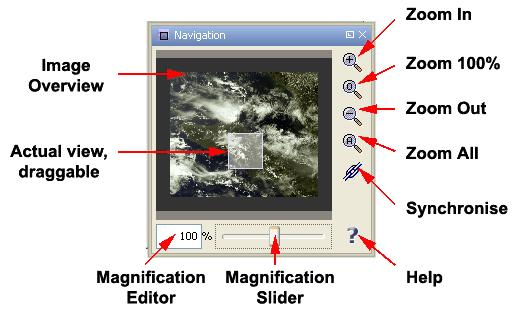
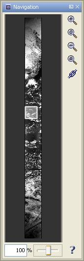
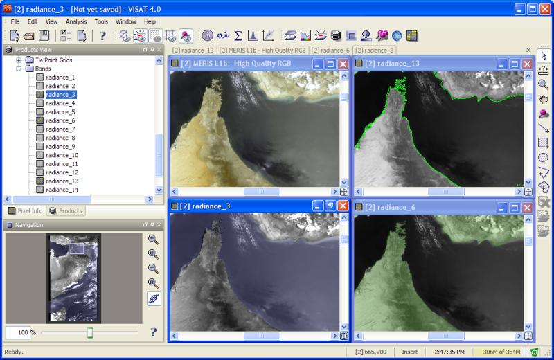

| The Navigation Window | |
The Navigation Window combines powerful features to manage the inspection of one or more image views.
Consider the following image:

The Navigation Window consists of:
The overview of the whole image on the left with the actual displayed view (highlighted). Drag the area around to scroll inside the image view.
An editor and a slider to adjust the magnification,
Four zooming tools and a synchronising button,
A help button.
The size of the window itself may be adjusted to best fit the proportions of the image. For example, a full orbit product may require that the Navigation Window be longish instead of quadratic: |
 |
The functionality of each feature is explained here in detail:
A click on the Zoom-In-Tool will increase the magnification of the image in discrete steps, centered on the image view. The result will be displayed instantly and the magnification value will be refreshed.
This tool will reset the image view to no magnification, meaning one image pixel will cover one monitor pixel.
A click on the Zoom-Out-Tool will decrease the magnification of the image in discrete steps, centered on the image view. The result will be displayed instantly and the magnification value will be refreshed.
A click on the Zoom-All-Tool will adjust the magnification so that the whole image fits into the image view. The result will be displayed instantly and the magnification value
in the editor will be refreshed. The same effect can be achieved by clicking on the  icon in the lower right corner of the image view.
icon in the lower right corner of the image view.
The following image shows VISAT with six image views that have been arranged with the "Tile Evenly" command in the Window Menu. When the Synchronise-Button is pressed, all available tools of the Navigation Window operate on all open image views.
As a result,
